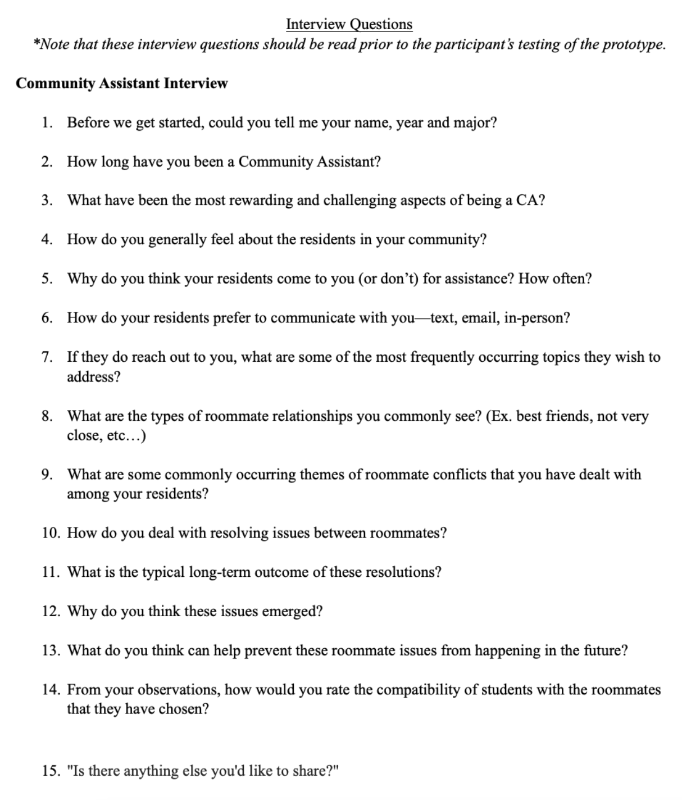
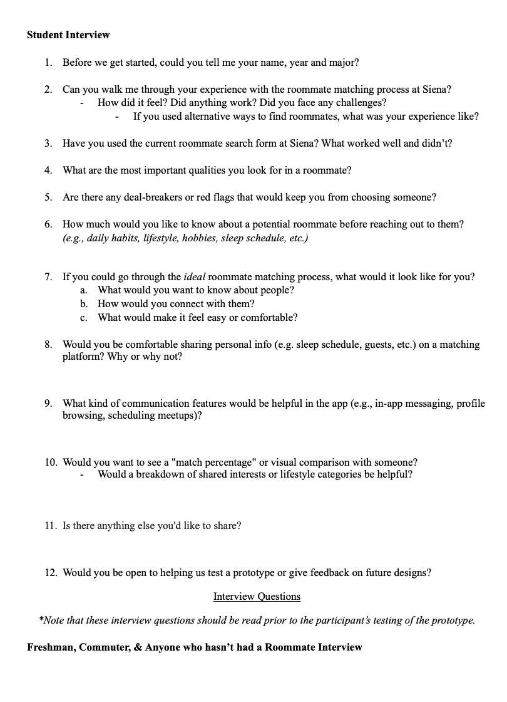
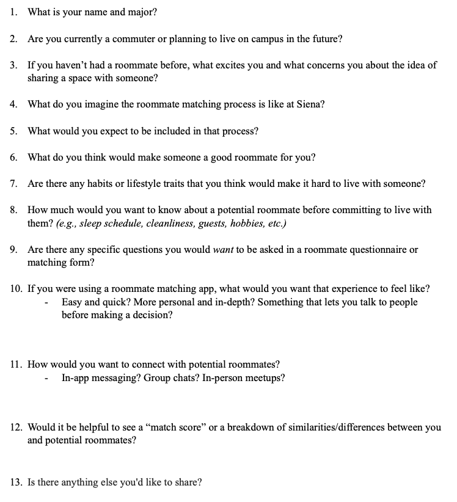

Saints Select
An official app for Siena College students to use to find their roommate.
Timeline:
June 2025-September 2025
Tools:
Figma, Google Form
Role:
UX/UI Designer, UX Researcher
Target Audience:
Siena College Students
Problems: No official roommate matching system in Siena College.
Finding a compatible roommate can be one of the most stressful parts of starting college. At Siena, incoming students often rely on short surveys or social media to connect with potential roommates, having no real roommate matching platform, which can lead to mismatched living situations and tension in the dorms. This process lacks personalization and meaningful insights into student lifestyles, interests, and habits.
The Solution
Saints Select is our solution to this problem. Saints Select is a roommate-matching platform, created to make students' experience easier and more intentional — helping students form connections that lead to positive roommate relationships and stronger campus communities. The platform helps Siena students find compatible roommates by matching them based on their hobbies, lifestyles, interests, and daily habits. It’s accessible on both mobile and desktop, ensuring an easy and inclusive experience for all students. As part of the UX design team, I contributed insights drawn from my experience as a Resident Assistant at Syracuse University, helping ensure the platform addressed real student needs and fostered a welcoming, community-oriented environment.
Stakeholders
The primary users of Saints Select are Siena College students who are searching for compatible roommates. These students may be incoming freshmen looking for their first college roommate or current students seeking new housing arrangements on or off campus. Another key stakeholder group includes Resident Assistants (RAs) and Residence Life staff, who can use insights from the platform to better support students during housing placements and roommate mediation. Their feedback also helps ensure the platform fosters a sense of community and reduces housing-related conflicts. Additionally, Siena College administrators are important stakeholders, as they oversee housing operations and student life initiatives. Their involvement ensures that the platform aligns with Siena’s values of inclusivity, collaboration, and student well-being.Lastly, student researchers and designers from both Siena College and Saint’s University played an essential role in creating and refining Saints Select, combining technical development with human-centered design to deliver a tool that genuinely improves the student housing experience.
User Research
To understand the needs and preferences of our target users, I conducted user research focused on college students and residential life staff. Since the goal of Saints Select is to create a roommate-matching platform that supports positive living experiences, the research aimed to uncover students’ priorities, frustrations, and expectations when finding roommates.
I used a combination of interviews, surveys, and questionnaires with Syracuse University and Siena College students, and Resident Assistants (RAs) from both schools. Syracuse already has a roommate-matching system in place, so many Syracuse participants provided valuable insights into what works well and what could be improved. Their feedback helped establish a benchmark for what Siena students might expect from a similar platform. I also created and distributed questionnaires for Siena students to gather their perspectives on what features would make the process easier and more trustworthy. Questions focused on roommate compatibility, lifestyle habits, communication preferences, and what qualities students value most in a roommate. In addition to student feedback, I interviewed RAs to learn about common roommate conflicts, how students are currently matched, and what challenges arise throughout the academic year. Their input highlighted the need for better transparency, communication tools, and personality-based matching.
Beyond the external research, I also contributed my own insights as a Syracuse University RA, incorporating first-hand experiences with student housing and relationship dynamics. I designed interview and survey questions, conducted interviews, analyze responses, and participate in mock usability critiques to evaluate early design prototypes. These collaborative sessions provided qualitative data that guided our team’s design decisions and ensured the final product reflected real student needs.
  Mockup Designs
Mockup Prototypes
This project was a collaborative effort between my university and Siena College, marking one of my first opportunities to apply UX and UI design in a cross-campus context. I was involved in several stages of the process, including user research, interviewing, and critiquing design iterations. Drawing from my experience as a Resident Assistant, I was able to provide meaningful insights into the student housing experience and the challenges of roommate matching. Through this project, I strengthened my understanding of collaboration, research-driven design, and the impact of creating solutions that enhance connection and community among students.